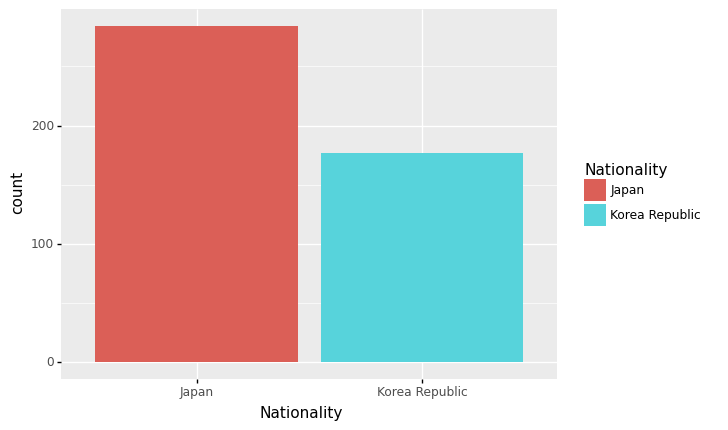

imports
barplot
df = pd.read_csv('https://raw.githubusercontent.com/guebin/DV2021/master/_notebooks/2021-10-25-FIFA22_official_data.csv')\
.query('Nationality=="Korea Republic" or Nationality=="Japan"')\
[['Nationality','Overall','Age']].reset_index(drop=True)
df| Nationality | Overall | Age | |
|---|---|---|---|
| 0 | Korea Republic | 89 | 28 |
| 1 | Japan | 77 | 28 |
| 2 | Japan | 73 | 28 |
| 3 | Korea Republic | 72 | 31 |
| 4 | Japan | 71 | 28 |
| ... | ... | ... | ... |
| 456 | Japan | 59 | 21 |
| 457 | Korea Republic | 60 | 21 |
| 458 | Japan | 54 | 17 |
| 459 | Korea Republic | 51 | 20 |
| 460 | Korea Republic | 58 | 25 |
461 rows × 3 columns
geom_col
- 예시1: 한국과 일본의 평균능력치 비교
| Nationality | Overall | |
|---|---|---|
| 0 | Japan | 66.478873 |
| 1 | Korea Republic | 65.457627 |
- 예시2: 한국과 일본의 평균능력치 비교 (색상변경)
| Nationality | Overall | |
|---|---|---|
| 0 | Japan | 66.478873 |
| 1 | Korea Republic | 65.457627 |
ggplot(data)+geom_col(aes(x='Nationality',y='Overall',fill='Nationality'))
#ggplot(data)+geom_col(aes(x='Nationality',y='Overall',color='Nationality'))<ggplot: (8739001430581)>- 예시3: 한국과 일본의 평균연령 비교
| Nationality | Age | |
|---|---|---|
| 0 | Japan | 26.084507 |
| 1 | Korea Republic | 27.158192 |
geom_col + position=‘dodge’
- 예시1: 한국과 일본의 평균연령+평균능력치 비교
geom_col + coord_flip()
- 예시1: 한국과 일본의 평균연령+평균능력치 비교 (90도회전)
geom_col + facet_wrap(var)
- 예시1: 한국과 일본의 평균연령+평균능력치 비교 (면분할)
data=df.groupby('Nationality').agg({'Overall':np.mean,'Age':np.mean})\
.stack().reset_index().rename({0:'value'},axis=1)
data| Nationality | level_1 | value | |
|---|---|---|---|
| 0 | Japan | Overall | 66.478873 |
| 1 | Japan | Age | 26.084507 |
| 2 | Korea Republic | Overall | 65.457627 |
| 3 | Korea Republic | Age | 27.158192 |
ggplot(data)+geom_col(aes(x='Nationality',fill='Nationality',y='value'),position='dodge')\
+facet_wrap('level_1')<ggplot: (8739001171105)>- 예시2: 한국과 일본의 평균연령+평균능력치 비교 (면분할)
geom_col + facet_grid(‘var_y ~ var_x’)
- 예시1: 한국과 일본의 평균연령+평균능력치+최대능력치 비교 (면분할)
data=df.groupby('Nationality').agg({'Overall':[np.mean,np.max],'Age':np.mean})\
.melt(ignore_index=False).reset_index()
data| Nationality | variable_0 | variable_1 | value | |
|---|---|---|---|---|
| 0 | Japan | Overall | mean | 66.478873 |
| 1 | Korea Republic | Overall | mean | 65.457627 |
| 2 | Japan | Overall | amax | 79.000000 |
| 3 | Korea Republic | Overall | amax | 89.000000 |
| 4 | Japan | Age | mean | 26.084507 |
| 5 | Korea Republic | Age | mean | 27.158192 |
geom_bar vs geom_col
- 예시1: 한국과 일본의 단순 선수 숫자 비교 (with goem_col)
data=df.groupby('Nationality').agg({'Age':'count'}).reset_index().rename({'Age':'count'},axis=1)
data| Nationality | count | |
|---|---|---|
| 0 | Japan | 284 |
| 1 | Korea Republic | 177 |

- 예시2: 한국과 일본의 단순 선수 숫자 비교 (with goem_bar)

- 특징1: 원래 데이터프레임 그대로 하는게 아니라 뭔가 변형된 값이 출력 (정확하게는 groupby + count가 변형요소)
- 특징2: y는 당연히 count이므로 y를 명시할 필요가 없음. (잘 생각해보면 명시하고 싶어도 명시할 수 없음, y는 groupby + count 에 의해서 계산된 값이고 df자체에는 존재하지 않음)
- 이렇게 약속된 변형은 stat='count' 옵션 때문에 가능함
- stat=’count’는 그룹바이이후에 count를 하라는 의미

- stat='identity' 로 옵션을 바꾸면 약속된 변환이 수행되지 않음
- stat=’identity’는 아무 변환도 하지말라는 의미
- 에러가난다.
(참고) 사실 아래의 3개의 코드가 모두 같다. <– 수업시간에 설명 X
ggplot(df)+geom_bar(aes(x='Nationality',y='..count..',fill='Nationality'),stat='count')
ggplot(df)+geom_bar(aes(x='Nationality',fill='Nationality'),stat='count') # y='..count..' 생략,
ggplot(df)+geom_bar(aes(x='Nationality',fill='Nationality')) # y='..count..' 생략, stat='count' 생략
<ggplot: (8739004080929)>geom_bar()의 불편한점
- 사실 편하라고 만든것 같은데, 그닥 편하지 않음.
- 편하라고 만든 점1: groupby를 자동으로 해줘서 groupby를 못하는 유저들이 사용하기 편리하게 함 -> 그런데 우리는 groupby 잘함
- 편하라고 만든 점2: groupby이후 count연산을 알아서 해줌 -> 그런데 count연산만 알아서해주고 그 이외의 연산은 잘 지원안됨
- 결론: groupby + count 조합에서만 편리하고 나머지는 편하지 않다.
- 불편한 예시: 나라별 overall의 평균을 geom_bar()로 플랏해보라.
| Nationality | Overall | |
|---|---|---|
| 0 | Japan | 66.478873 |
| 1 | Korea Republic | 65.457627 |

심슨의 역설
- 버클리대학교의 입학데이터
- 주장: 버클리대학에 gender bias가 존재한다.
- 1973년 가을학기의 입학통계에 따르면 지원하는 남성이 여성보다 훨씬 많이 합격했고, 그 차이가 너무 커서 우연의 일치라 보기 어렵다.
df=pd.read_csv("https://raw.githubusercontent.com/guebin/DV2022/master/posts/Simpson.csv",index_col=0,header=[0,1])\
.stack().stack().reset_index()\
.rename({'level_0':'department','level_1':'result','level_2':'gender',0:'count'},axis=1)
df| department | result | gender | count | |
|---|---|---|---|---|
| 0 | A | fail | female | 19 |
| 1 | A | fail | male | 314 |
| 2 | A | pass | female | 89 |
| 3 | A | pass | male | 511 |
| 4 | B | fail | female | 7 |
| 5 | B | fail | male | 208 |
| 6 | B | pass | female | 18 |
| 7 | B | pass | male | 352 |
| 8 | C | fail | female | 391 |
| 9 | C | fail | male | 204 |
| 10 | C | pass | female | 202 |
| 11 | C | pass | male | 121 |
| 12 | D | fail | female | 244 |
| 13 | D | fail | male | 279 |
| 14 | D | pass | female | 131 |
| 15 | D | pass | male | 138 |
| 16 | E | fail | female | 299 |
| 17 | E | fail | male | 137 |
| 18 | E | pass | female | 94 |
| 19 | E | pass | male | 54 |
| 20 | F | fail | female | 103 |
| 21 | F | fail | male | 149 |
| 22 | F | pass | female | 238 |
| 23 | F | pass | male | 224 |
시각화1: 전체합격률
- df1
| gender | result | count | |
|---|---|---|---|
| 0 | female | fail | 1063 |
| 1 | female | pass | 772 |
| 2 | male | fail | 1291 |
| 3 | male | pass | 1400 |
- df2
| gender | count2 | |
|---|---|---|
| 0 | female | 1835 |
| 1 | male | 2691 |
- merge: 두개의 데이터프레임을 합친다
df.groupby(['gender','result']).agg({'count':np.sum}).reset_index()\
.merge(df.groupby('gender').agg({'count':np.sum}).reset_index().rename({'count':'count2'},axis=1))| gender | result | count | count2 | |
|---|---|---|---|---|
| 0 | female | fail | 1063 | 1835 |
| 1 | female | pass | 772 | 1835 |
| 2 | male | fail | 1291 | 2691 |
| 3 | male | pass | 1400 | 2691 |
- 비율계산
df.groupby(['gender','result']).agg({'count':np.sum}).reset_index()\
.merge(df.groupby('gender').agg({'count':np.sum}).reset_index().rename({'count':'count2'},axis=1))\
.eval('rate = count/count2')| gender | result | count | count2 | rate | |
|---|---|---|---|---|---|
| 0 | female | fail | 1063 | 1835 | 0.579292 |
| 1 | female | pass | 772 | 1835 | 0.420708 |
| 2 | male | fail | 1291 | 2691 | 0.479747 |
| 3 | male | pass | 1400 | 2691 | 0.520253 |
- 시각화
data1= df.groupby(['gender','result']).agg({'count':np.sum}).reset_index()\
.merge(df.groupby('gender').agg({'count':np.sum}).reset_index().rename({'count':'count2'},axis=1))\
.eval('rate = count/count2')
ggplot(data1.query('result=="pass"'))+geom_col(aes(x='gender',fill='gender',y='rate'))
<ggplot: (8789343060161)>- 결론: 남자의 합격률이 더 높다. \(\to\) 성차별이 있어보인다(?)
시각화2: 학과별 합격률
- df2
df.groupby(['department','gender']).agg({'count':np.sum}).reset_index().rename({'count':'count2'},axis=1)| department | gender | count2 | |
|---|---|---|---|
| 0 | A | female | 108 |
| 1 | A | male | 825 |
| 2 | B | female | 25 |
| 3 | B | male | 560 |
| 4 | C | female | 593 |
| 5 | C | male | 325 |
| 6 | D | female | 375 |
| 7 | D | male | 417 |
| 8 | E | female | 393 |
| 9 | E | male | 191 |
| 10 | F | female | 341 |
| 11 | F | male | 373 |
- merge
df.merge(df.groupby(['department','gender']).agg({'count':np.sum}).reset_index().rename({'count':'count2'},axis=1))\
.eval('rate = count/count2')| department | result | gender | count | count2 | rate | |
|---|---|---|---|---|---|---|
| 0 | A | fail | female | 19 | 108 | 0.175926 |
| 1 | A | pass | female | 89 | 108 | 0.824074 |
| 2 | A | fail | male | 314 | 825 | 0.380606 |
| 3 | A | pass | male | 511 | 825 | 0.619394 |
| 4 | B | fail | female | 7 | 25 | 0.280000 |
| 5 | B | pass | female | 18 | 25 | 0.720000 |
| 6 | B | fail | male | 208 | 560 | 0.371429 |
| 7 | B | pass | male | 352 | 560 | 0.628571 |
| 8 | C | fail | female | 391 | 593 | 0.659359 |
| 9 | C | pass | female | 202 | 593 | 0.340641 |
| 10 | C | fail | male | 204 | 325 | 0.627692 |
| 11 | C | pass | male | 121 | 325 | 0.372308 |
| 12 | D | fail | female | 244 | 375 | 0.650667 |
| 13 | D | pass | female | 131 | 375 | 0.349333 |
| 14 | D | fail | male | 279 | 417 | 0.669065 |
| 15 | D | pass | male | 138 | 417 | 0.330935 |
| 16 | E | fail | female | 299 | 393 | 0.760814 |
| 17 | E | pass | female | 94 | 393 | 0.239186 |
| 18 | E | fail | male | 137 | 191 | 0.717277 |
| 19 | E | pass | male | 54 | 191 | 0.282723 |
| 20 | F | fail | female | 103 | 341 | 0.302053 |
| 21 | F | pass | female | 238 | 341 | 0.697947 |
| 22 | F | fail | male | 149 | 373 | 0.399464 |
| 23 | F | pass | male | 224 | 373 | 0.600536 |
- 시각화
data2=df.merge(df.groupby(['department','gender']).agg({'count':np.sum}).reset_index().rename({'count':'count2'},axis=1))\
.eval('rate = count/count2')
ggplot(data2.query('result=="pass"'))+geom_col(aes(x='gender',fill='gender',y='rate'))\
+facet_wrap('department')
<ggplot: (8789343111249)>- 학과별로 살펴보니 오히려 A,B,F,D의 경우 여성의 합격률이 높다.
- 교재에서 설명한 이유: 여성이 합격률이 낮은 학과에만 많이 지원하였기 때문
ggplot(data2.query('result=="pass"'))+geom_col(aes(x='department',y='count2',fill='gender'),position='dodge')
<ggplot: (8789343070225)>- 살펴보니 합격률이 높은 A,B학과의 경우 상대적으로 남성이 많이 지원하였음. 합격률이 낮은 C,D학과는 상대적으로 여성이 많이 지원함. D,F의 지원수는 비슷
HW
| department | result | gender | count | |
|---|---|---|---|---|
| 0 | A | fail | female | 0 |
| 1 | A | fail | male | 100 |
| 2 | A | pass | female | 1 |
| 3 | A | pass | male | 900 |
| 4 | B | fail | female | 400 |
| 5 | B | fail | male | 1 |
| 6 | B | pass | female | 600 |
| 7 | B | pass | male | 1 |
- 시각화1: 남녀합격률시각화

- 시각화2: 학과별 남녀합격률 시각화
- A학과: 쓰면 거의 붙는 학과
- B학과: 쓰면 반정도 붙는 학과
- 시각화3: 학과별 지원자 수 시각화
- 여학생은 쓰면 붙는 A학과에는 거의 지원안함, 대신에 쓰면 반정도 붙는 B학과에 대부분 지원함
HW
df = pd.read_csv('https://raw.githubusercontent.com/guebin/DV2022/master/posts/HRDataset_v14.csv')
df| Employee_Name | EmpID | MarriedID | MaritalStatusID | GenderID | EmpStatusID | DeptID | PerfScoreID | FromDiversityJobFairID | Salary | ... | ManagerName | ManagerID | RecruitmentSource | PerformanceScore | EngagementSurvey | EmpSatisfaction | SpecialProjectsCount | LastPerformanceReview_Date | DaysLateLast30 | Absences | |
|---|---|---|---|---|---|---|---|---|---|---|---|---|---|---|---|---|---|---|---|---|---|
| 0 | Adinolfi, Wilson K | 10026 | 0 | 0 | 1 | 1 | 5 | 4 | 0 | 62506 | ... | Michael Albert | 22.0 | Exceeds | 4.60 | 5 | 0 | 1/17/2019 | 0 | 1 | |
| 1 | Ait Sidi, Karthikeyan | 10084 | 1 | 1 | 1 | 5 | 3 | 3 | 0 | 104437 | ... | Simon Roup | 4.0 | Indeed | Fully Meets | 4.96 | 3 | 6 | 2/24/2016 | 0 | 17 |
| 2 | Akinkuolie, Sarah | 10196 | 1 | 1 | 0 | 5 | 5 | 3 | 0 | 64955 | ... | Kissy Sullivan | 20.0 | Fully Meets | 3.02 | 3 | 0 | 5/15/2012 | 0 | 3 | |
| 3 | Alagbe,Trina | 10088 | 1 | 1 | 0 | 1 | 5 | 3 | 0 | 64991 | ... | Elijiah Gray | 16.0 | Indeed | Fully Meets | 4.84 | 5 | 0 | 1/3/2019 | 0 | 15 |
| 4 | Anderson, Carol | 10069 | 0 | 2 | 0 | 5 | 5 | 3 | 0 | 50825 | ... | Webster Butler | 39.0 | Google Search | Fully Meets | 5.00 | 4 | 0 | 2/1/2016 | 0 | 2 |
| ... | ... | ... | ... | ... | ... | ... | ... | ... | ... | ... | ... | ... | ... | ... | ... | ... | ... | ... | ... | ... | ... |
| 306 | Woodson, Jason | 10135 | 0 | 0 | 1 | 1 | 5 | 3 | 0 | 65893 | ... | Kissy Sullivan | 20.0 | Fully Meets | 4.07 | 4 | 0 | 2/28/2019 | 0 | 13 | |
| 307 | Ybarra, Catherine | 10301 | 0 | 0 | 0 | 5 | 5 | 1 | 0 | 48513 | ... | Brannon Miller | 12.0 | Google Search | PIP | 3.20 | 2 | 0 | 9/2/2015 | 5 | 4 |
| 308 | Zamora, Jennifer | 10010 | 0 | 0 | 0 | 1 | 3 | 4 | 0 | 220450 | ... | Janet King | 2.0 | Employee Referral | Exceeds | 4.60 | 5 | 6 | 2/21/2019 | 0 | 16 |
| 309 | Zhou, Julia | 10043 | 0 | 0 | 0 | 1 | 3 | 3 | 0 | 89292 | ... | Simon Roup | 4.0 | Employee Referral | Fully Meets | 5.00 | 3 | 5 | 2/1/2019 | 0 | 11 |
| 310 | Zima, Colleen | 10271 | 0 | 4 | 0 | 1 | 5 | 3 | 0 | 45046 | ... | David Stanley | 14.0 | Fully Meets | 4.50 | 5 | 0 | 1/30/2019 | 0 | 2 |
311 rows × 36 columns
- 성별(Sex) 평균급여(Salary)를 구하고 아래의 지침에 따라 시각화 하라.
- barplot으로 시각화
- 성별을 색깔과 x축으로 구분
- 평균급여는 y축으로 구분
- 성별(Sex)/인종별(RaceDesc) 평균급여(Salary)를 구하고 아래의 지침에 따라 시각화 하라.
- barplot으로 시각화
- 인종은 면분할로 구분
- 성별은 x축과 색깔로 구분
- 평균급여는 y축으로 구분